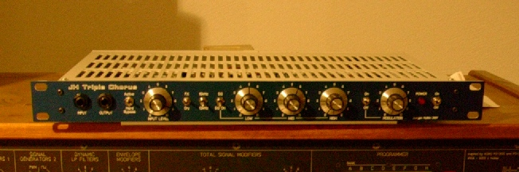

JH. String Ensemble / Triple Chorus - "Solina"(TM) Emulator
(Disclaimer: Solina used to be a
Trademark of Eminent, and was licenced to ARP when the original String
Ensemble keyboard was built. AFAIK the trademark is not active anymore
- I searched the US trademark data base and found the status "dead" -
but you can never know for sure. I do not intend to infringe anybody's
right of exclusive use of their Trademarks. In case someone still has the right to the Solina
trademark, I kindly ask you to notify me using this email, and I'll remove it from
my site immediately.)

Background
The lush Sound
of the Solina (TM) Ensemble is created by 3 BBD delay lines that are
modulated in a unique way:
There are two 3-phase modulation generators, one
running at slow speed ("Chorus"), and one running at high speed
("Vibrato").
We'll focus on one of the modulation
generators first, "Chorus": the slow one.
"3-Phase" means that the modulation generator has 3 outputs, each of
which's phase is roughly 120 deg apart from the previous output.
Let's call them "0 deg", "120 deg" and 240 deg" - it's easy to see
that, with 360 deg describing a full circle, the three modulation
outputs a modulation generator are equally distributed around a circle.
They are routed to the CV inputs of the 3 BBD's clock VCOs. Modulation
of a BBD line causes a pitch shift similar to the Doppler effect
of a moving sound source, so with the 3 BBD lines modulated by
the 3-phase control signals, a sonic image of 3 sound sources
that are moving along the same circle, with equal distance to one
another along the outline of the circle, is created.
Actually, each BBD clock VCO is controlled
not by a single modulation generator, but by a combination of the slow
and the fast generator.
BBD1 sees a CV that is combined from the Chorus generator's "0 deg"
output and the Vibrato generator's "0 deg" output.
BBD2 sees Chorus "120 deg" and Vibrato "120 deg".
BBD3 sees Chorus "240deg" and Vibrato "240 deg".
This method creates the famous "Solina"
sound, which was so sucessfull that it has been emulated by other
manufacturers.
Of these, I have studied two very closely: The Crumar Performer, and
the Dr. Boehm Phasing Rotor 78. I've also taken a look at the Korg
Polysix's Ensemble mode.
Classic Implementation
The original Solina did not use a 3-phase
oscillator at all. Not even a sine wave oscillator, for that matter.
There's a Square Wave oscillator which is then turned into an
approximated sine wave by heavy filtering, creating the "0 deg" signal
of the "Chorus" part.
This is then fed into a 1-pole low pass filter with a gain 1.83 for
very low frequencies. The brilliant idea behind this: For one specific
input frequency, you get unity gain and
the desired 120 degree phase shift. You can adjust the frequency of the
square wave generator for the "0 deg " and "120 deg" signals to have
the same amplitude, and you'll have the right frequency and the right
phase shift automatically.
The "240 deg" signal is not created with another filter:
It's derived from the "0 deg" and "120 deg" signal with a simple
inverting adder stage. (The wonders of vector maths: The vector sum of
a balanced 3-phase system is always zero.)
The "Vibrato" path even needs one stage less: There's the square wave
oscillator with filtering for the "0 deg" signal, a LPF for the "120
deg signal".
These two signals are added to the "Chorus" signal chain at the
respective stages, so the inverting adder of the "Chorus" takes care of
the vector maths to create the "240 deg" signal of the "Vibrato" as
well. (Even though there is no point in the circuit where you could
measure the individual "240 deg" signals separately!)
This was pretty brilliant at a time when
saving an opamp stage in a circuit made a difference. :)
From today's point of view, it's the tiny flaws of the original method
that may make it interesing: Whatever adjustment of the Vibrato and
Chorus speed potentiometers, it is not
possible to create a perfect level balance and equal phase distribution
for both, the fast and the slow part of the modulation.
My conclusion is that if
there is a perceivable difference in the sound of a Solina, compared to
a Boehm or the Polysix (other than EQ-ing and SNR), this may have to do
with these special modulation waveforms.
The Boehm, for instance, has a very direct and precise method of
directly creating 3-phase signals.
My
Emulation
When emulating the behaviour of some Vintage
instrument, my design goal is always to be as precise as possible. But
don't get fooled: If part of that vintage sound is due to certain
imperfections, all the precision of the emulation must be directed to
re-create that specific - once "non-perfect", but now your reference! -
solution.
This doesn't mean to just copy the original and to use the same
components. While this certainly works in most cases, it's rarely an
option if you want to give others the oportunity to to build your
circuit as well. I have a set
of TCA 350's in my drawer, but I'd rather go for BBDs that are still
available (even when production has long stopped), the TDA1022. And
I've omitted a lot of the more bulky components in the Solina's
modulation generators, but I've painstakingly taken care to get the
same waveforms, with all their "flaws", as in the original. (A circuit
simulator is a gift from heaven for that kind of work.)
I've also noticed that a diode in the
Solina's BBD Clock VCOs is slightly bending the combined modulation
waveform, before it really hits the VCO core. As my VCO implementation
is different - CMOS gates like the Boehm, instead of transistors
- that kind of waveform bending is also implemented in a
different way, to get the same result without
introducing en extra 21V supply rail. I've made it adjustable with a
trimmer, so you can set that effect to your taste, Solina Way or Dr.
Boehm Way.
It's always helpful when someone else is
looking at the documents I've published and double check them. Thanks
to all of you who spotted the 330 ohm resistor in my BOM without
quantity - it was a copy and paste error, and I fixed it in the BOM now.
Some of you are going way beyond just checking for errors, and create
helpful documents of their own:
Guido Möller has set up a web site (in
German) with colour coded cross-reference of components on the BOM and
on the board layout.
And he even has set up a "Warenkorb"
(shopping cart) at Reichelt with all the PCB mounted parts
except the TDA1022s. He used different connectors which have the wires
readily attached, which should make building the project a little
easier.
Thank you, Guido!
Follow this link to his Spezialton
Solina page.
Mike "clickmrmike" has posted a link to his BOM with Mouser part numbers. It's in spreadsheed format - thank you Mike!
I heard there's a similar page in progress
with a Mouser shopping cart from another US Triple Chorus builder.
I'll post a link here when it's available.
I received a BOM for UK builders, mostly with Farnell part numbers, from Clive (aka Analogue) via email. Thank you!
Thanks for all who make their lists of parts available for the benefit of the community.
These lists are intended to help you shopping for parts - they are not guaranteed to be free of errors, and they show one option,
among many, what parts you can buy. As with all diy projects that
don't come as complete kits, you have the choice to go for different
brands / quality / prices for components.
Bill & Will have started a page documenting their progress with building the Triple Chorus. They also have front panel designs.